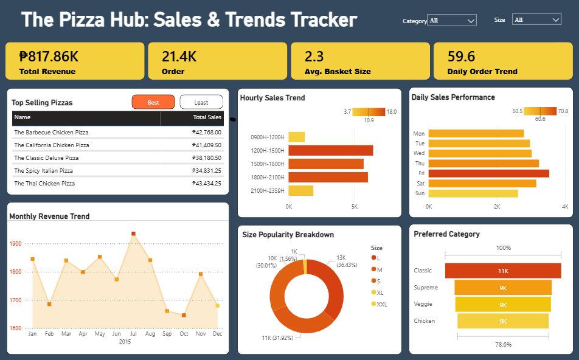
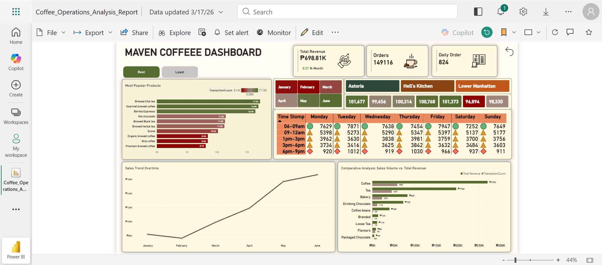
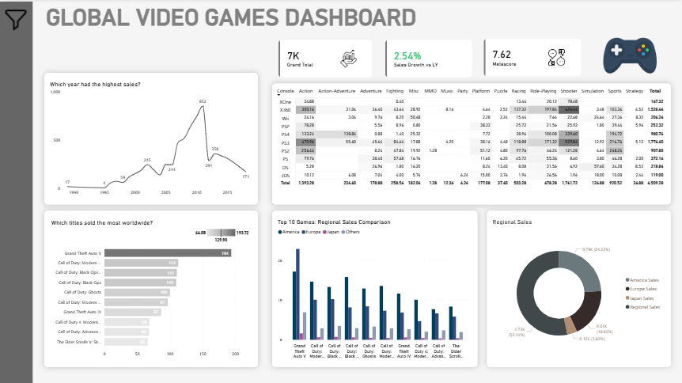
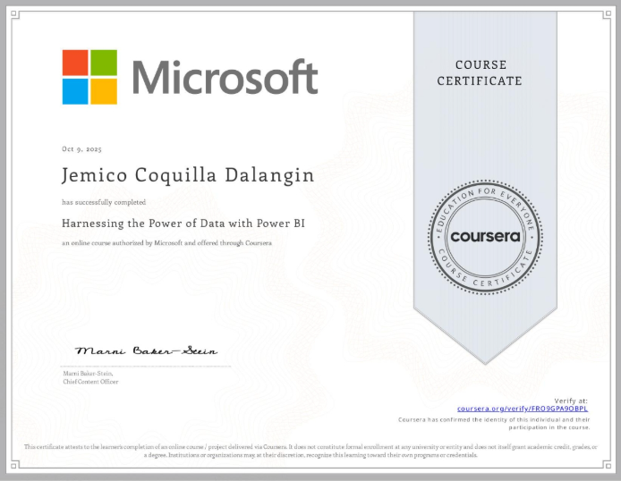

My Work
Elevator Systems: Performance & Reliability Tracker
An end-to-end operational dashboard that monitors real-time elevator availability, traffic patterns, and wait-time anomalies. Developed to identify mechanical hotspots and optimize maintenance scheduling in high-rise building management.
- Power BI
- DAX Formulas
- Data Cleaning
- BMS Operations

The Pizza Hub: Sales & Trends Tracker
A comprehensive sales dashboard that tracks daily trends, peak hours, and best-selling products. Used this to identify operational bottlenecks and revenue growth opportunities.
- Power BI
- DAX Formulas
- Data Cleaning
- Sales Forecasting

Plant_DTS: Global Sales & Profitability Analysisr
End-to-end Power BI sales analytics solution featuring dynamic metric switching (Sales, Qty, GP) via DAX, time intelligence for YOY performance tracking, and automated data cleaning for regional profitability insights.
- Power BI
- DAX Formulas
- Data Cleaning
- Sales Forecasting
- business-intelligence executive-dashboard

Maven Coffee Operational Analysis
An operational dashboard designed to track transaction patterns, identify peak hours, and analyze product category performance. Used heat maps and time-series analysis to provide actionable insights for staff scheduling and inventory management.
- Power BI
- Data Modeling
- Time-Series Analysis
- Heat Map Design

Global Video Game Market Trends
An executive-level dashboard analyzing gaming trends from 1980 to 2015+. It features advanced DAX measures to track industry growth, a pop-out slicer menu for seamless navigation, and hierarchy filtering by Decade, Genre, and Console.
- Power BI
- Advanced DAX
- Market Trend Analysis
- UI/UX Dashboard Design

Certificates
Preparing Data for Analysis with Microsoft Excel
Microsoft | Coursera | Authorized Issuer
Issued: Aug 27, 2025
Verify Credential →
Harnessing the Power of Data with Power BI
Microsoft | Coursera | Authorized Issuer
Issued: Oct 9, 2025
Verify Credential →Extract, Transform and Load Data in Power BI
Microsoft | Coursera | Authorized Issuer
Issued: Nov 17, 2025
Verify Credential →Tools & Technologies